03 - Scope and Delivery Phases
Phase 1 follows the team's MVP plan in
league-fe/plans/20261104-2126-bida-league-mvp/. Status values: Built and onmaster· Parked built but parked (FE_parked/) · Planned specified, code missing from the repo · Target not started.
3.1 Capability map

3.2 Phases
3.2.1 Phase 1: MVP "run a team night on a phone"
Goal: a captain runs a whole night on a phone: open tonight's fixture, put up 5 players within the 23-SL cap, enter 5 results, submit. An admin changes a skill level and sees the history.
| Area | Scope | Status |
|---|---|---|
| Auth | Google OIDC + PKCE, cookie session, CSRF, logout, /me |
Built |
| Onboarding | Link a Google account to a member ID (/members/preview, /me/link) |
Built UI · Planned API |
| Roles | ADMIN / CAPTAIN / PLAYER from users_roles; captain-owns-night check |
Built tables · Planned enforcement |
| Schema | Seasons, divisions (cap 23), venues, players (SL 2–7, paid flag), teams, race chart, team/individual matches, stats, RBAC | Built00001_init.sql |
| Business rules | team_rosters, snapshot / score / roll-up / stats triggers, can_put_up(), change_skill_level(), views |
Planned00002 (missing) |
| League API | 13 endpoints + /teams |
Plannedinternal/league (missing) |
| Schedule screen | Season/division select, week chips, fixture cards | Parked |
| Night screen | Both rosters (SL, MW/MP, points), 5-match scoresheet, next action | Parked |
| Put-up | Candidate list with x/23 and block reasons; home puts up first on odd matches |
Parked |
| Result entry | Games (capped at race), innings, defensive shots; points preview | Parked |
| Submit | Captain submits a complete night; admin may edit afterwards | Parked |
| Admin players | Search, SL change with reason, history, transfer, add paid member | Parked |
| PWA | Installable, static-asset cache, light/dark, en/vi | Built |
| Delivery | FE → Vercel on tag; BE image → Artifact Registry on tag | Built· Target GKE deploy |
Out of Phase 1 (the MVP plan's own out-of-scope list): coin flip, live tap-by-tap scoring, offline sync, rack-level data, notifications, payments, 9-Ball.
3.2.2 Phase 2: full league operations
| Area | Scope |
|---|---|
| Live scoring | Coin flip, lag, Screen 5 (turn over, DS, timeouts, 6 rack outcomes, undo), racks, accolades (BR, 8OB, Rackless, Double-strike), offline queue, live viewers (08) |
| Verification | Dual-captain score matching, +1 (8B) / +10 (9B) bonus, disputes, LO resolution |
| 9-Ball | Ball-tap scoring, dead balls, 20-point matrix, per-format SL (1–9) |
| Handicap | SL suggestion (8B effective innings over the last 10 wins; 9B PPI) with admin approval |
| Profile and standings | Stats / Teams tabs, public standings |
| Payments | Membership + weekly fees, MoMo / ZaloPay |
| Identity | Zalo login / Mini App; generated Member ID and Team ID |
| Platform | Redis, worker + outbox, rate limiting, structured logs, GKE manifests, migration runner, staging environment |
3.2.3 Phase 3: growth
Master division, tournaments and brackets, anti-sandbagging anomaly detection, multi-league tenancy (League Operator role), sponsors, 10-Ball / Carom, venue dashboard.
3.3 Phase 1 user stories
| ID | Story | Acceptance criteria | Status |
|---|---|---|---|
| US-01 | As a user I sign in with Google | PKCE + state + nonce; sid/csrf cookies; new users go to /onboarding; errors show a banner |
Built |
| US-02 | As a new user I link my member ID | Preview shows a display name, SL and team; refused if already linked to another account; then /me.playerId is set |
Built UI · Planned API |
| US-03 | As a player I see the schedule for my division | Season/division select, week chips; cards show teams, venue, time, status, points | Parked· Planned |
| US-04 | As anyone I open a night | Both rosters with SL, MW/MP, points (player_division_stats); 5 matches with snapshots |
Parked· Planned |
| US-05 | As a captain I put up a player | Only on my own night; list shows canPutUp + reason; would_break_23 reads the division cap; the server re-checks (40004) |
Parked· Planned |
| US-06 | As a captain I enter a result | Games ≤ race; points computed by trigger (3/0, 2/1 hill = race − 1, 2/0); night totals roll up | Parked· Planned |
| US-07 | As a captain I submit the night | Only when all 5 are complete; submitted_by/at set; standings count only submitted nights |
Parked· Planned |
| US-08 | As a captain I add a paid member to my roster | Unpaid → 40003; one active roster per player |
Parked· Planned |
| US-09 | As an admin I change a player's SL | Reason required; history row with author; played matches keep their snapshot | Parked· Planned |
| US-10 | As an admin I transfer a player | Close the old roster row (left_at) and open the new one |
Parked· Planned |
| US-11 | As a player-role user I can't act | 403 on every write | Planned |
3.4 Next steps to finish Phase 1
Restore league-be to plan-2/plan-3 state:
- The
team_rosters+ CHECK changes. 00002_business_rules.sql.internal/league+router/league.go.- The
/merole andplayerId. - The member preview/link endpoints.
make migrate/make seed.
See 27.
- The
Un-park the FE screens per
_parked/RESTORE.md, bringing them up to the current conventions (named exports,react-router,queryOptions).Generate FE types from swagger and delete
types/league.ts.Run the FE and BE together (browser), then deploy the API to GKE and publish the Google consent screen.
Beta: one division, the seed teams, real captains.